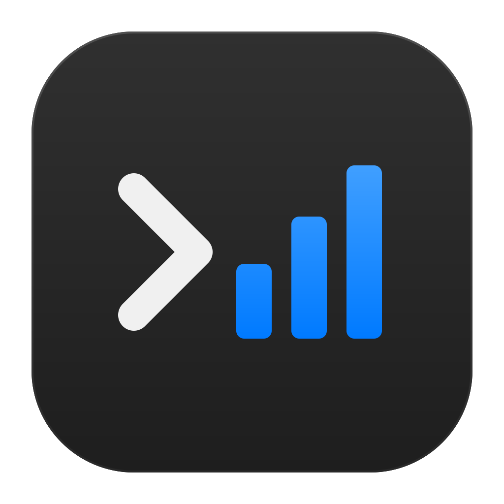
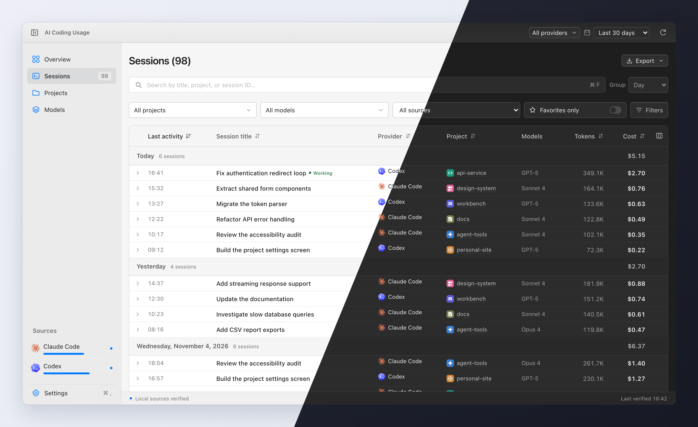
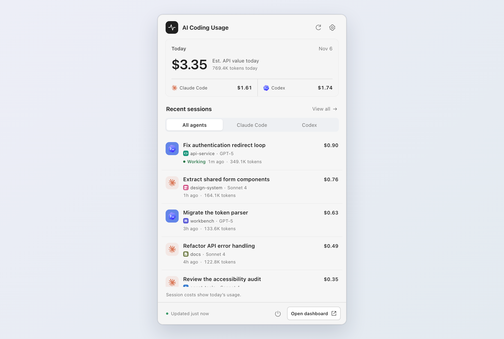

Search your sessions.
Search conversations, filter by project or provider, and group by date. Add local titles, tags, and favorites to keep useful sessions close.
A best-effort “Working” signal for
active sessions

AI Coding Usage Get the appAll your Claude Code and Codex sessions, tokens, and estimated costs in one desktop app.
Free & open source · macOS, Windows & Linux

Browse individual sessions or compare usage
across projects,
models, and providers.
Search conversations, filter by project or provider, and group by date. Add local titles, tags, and favorites to keep useful sessions close.
Explore daily, weekly, and monthly trends. Compare providers, projects, and models, then export your reports as CSV or JSON.
Set a monthly allowance for each provider and follow estimated spend in the sidebar.
Today’s usage and recent sessions, right in your menu bar or system tray, without opening the dashboard.

LOCAL BY DESIGN
The app reads the logs you already have, without changing them. Your coding activity stays on your computer.
Apple Silicon · .dmg
Download for Mac64-bit · .exe installer
Download for Windows64-bit · AppImage
Download for Linux Also available as .deb and .rpm
Mac builds are not notarized. Windows installers are unsigned.
First-launch instructions·All releases & checksums
No. Costs are estimated USD API-equivalent values based on the tokens in your logs. They are not your Claude or ChatGPT subscription charges, and they don’t measure provider quota usage.
Open the app and connect either provider or both. Standard local log folders are detected automatically. If you keep logs elsewhere, add a custom folder in Settings → Sources, then refresh to load your usage.
macOS: Copy the app to Applications and try opening it. If it is blocked, open System Settings → Privacy & Security, find the AI Coding Usage message, and select Open Anyway.
Windows: The unsigned installer may trigger SmartScreen. Select More info → Run anyway if available. Managed devices may require your administrator’s help.
Yes. AI Coding Usage is free and open source under the MIT license. It’s built with ccusage, Tauri, and React. Browse the source, report a bug, or contribute on GitHub.